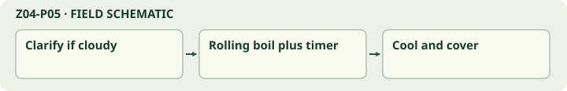

Z04-P05 · Water
Boil for microbial treatment
Apply the correct boiling endpoint and separate it from preclarification.
When it applies · Water with an acceptable chemical source history and suspected microbial contamination. Stable safe heat is available.
Equipment · Clean heat-safe pot, safe heat source, timer or watch and sanitized covered container.

Actions
- Settle cloudy water or strain it through clean cloth before boiling. Use a stable setup according to equipment instructions.[W08, W02, ED]
- Bring the water to a rolling boil and keep it there one minute. Above 6,500 feet, maintain the boil for three minutes.[W02]
- Cool the water and keep it covered in a clean sanitized container. Use clean tools to avoid recontamination.[W02, W06, ED]
Verify · Start timing only after a rolling boil begins, and protect the finished batch from raw water.[W02, ED]
Stop or change course · Use an alternate supply if chemical contamination is suspected or the pot or heat source is unsafe.[W01, ED]
Evidence and editorial notes
- W01 · CDC · How to Make Water Safe in an Emergency
- Water with fuel or toxic chemicals in it · Suspected fuel, toxic chemicals or radioactive contamination
Use a different safe supply. Standard boiling and microbial disinfection do not make this water safe.
Primary source · checked 2026-11-24 - W02 · CDC · How to Make Water Safe in an Emergency
- Boil > Steps for boiling water · Microbiologically suspect water with acceptable chemical source; portable heat and safe vessel
Clarify cloudy water first. Rolling boil for one minute; above 6,500 feet for three minutes. Cool and cover in sanitized containers.
Primary source · checked 2026-11-24 - W06 · CDC · How to Create an Emergency Water Supply
- How to store emergency water; Safe storage containers · Potable water intended for emergency storage
Prefer sealed commercial water or clean food-grade tight-closing containers. Avoid containers that held toxic chemicals.
Primary source · checked 2026-11-24 - W08 · CDC · How to Make Water Safe in an Emergency
- Boil > Steps for boiling water > cloudy water · Cloudy water with no identified chemical hazard
Settling or cloth clarification only prepares water for treatment. Do not count it as disinfection.
Primary source · checked 2026-11-24
Source lineage · B009 revision and B012 P22.